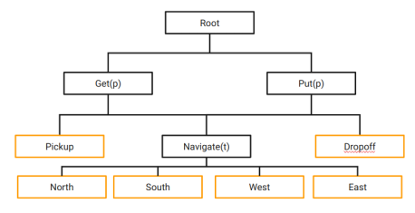

Hierarchical Reinforcement Learning Method for OpenAI Gym's Taxi-v3 Environment.
Introduction
This project has been developed as the final project for the Reinforcement Learning course in the Master's in Artificial Intelligence at Universidad Carlos III de Madrid.
The research explores the performance of Hierarchical Reinforcement Learning (HRL) in comparison to the traditional approach of reinforcement learning, specifically in the OpenAI Gym Taxi environment (Brockman et al. 2016). In this case, it is suggested that applying a hierarchical structure in the learning process can significantly improve the agent's effectiveness and efficiency in solving tasks. Through systematic experiments and comparative evaluations, we demonstrate that the HRL approach achieves superior performance in terms of convergence time and final performance compared to traditional reinforcement learning methods, primarily for complex environments such as those involving multiple passengers. These results support the efficiency of the hierarchical approach in enhancing the agent's adaptability and decision-making capabilities in the specific context of the taxi problem. This work contributes to understanding the applicability and benefits of hierarchical reinforcement learning in practical environments.
By transferring the learned hierarchy from a single-person problem to an extended version involving two people, we achieve a more robust learning of the task in fewer episodes compared to a strategy solely based on Q-Learning.
The hierarchy extension involves treating GET and PUT tasks as parameterized tasks (p), analogous to what the original paper proposes for the Navigate task, where p represents the person on whom to perform the operation.

Installation
Python version used: 3.10
Using conda:
conda create -f environment.yml
cd src
pip install -e custom
Using pip:
pip install -r requirements.txt
cd src
pip install -e custom
Author
Daniel Cabrera Rodríguez Github: @dan415
License
TODO